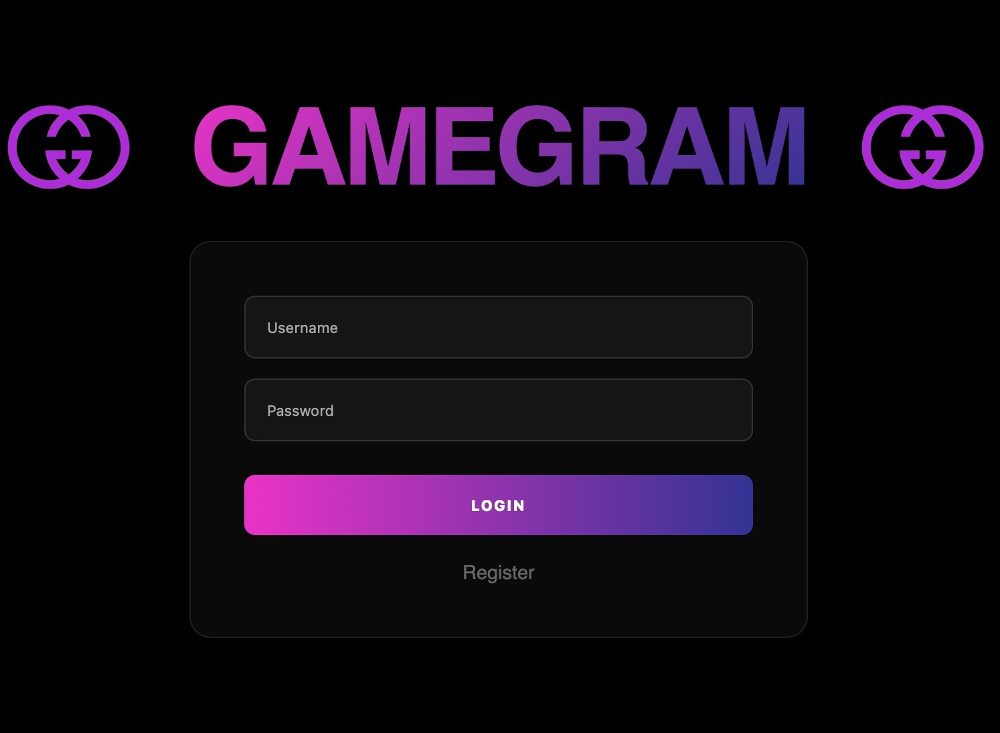
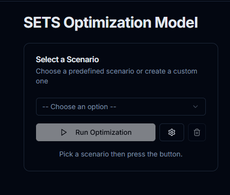
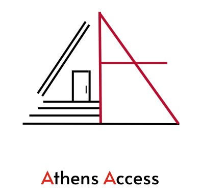
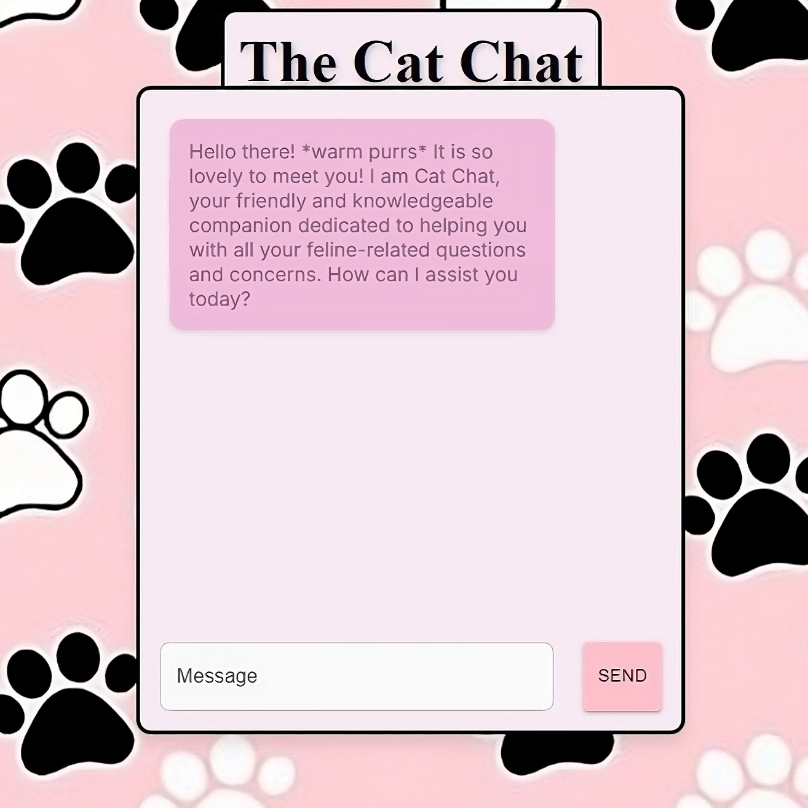
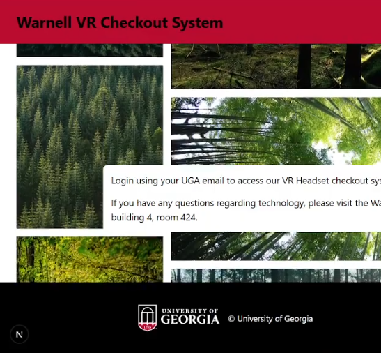
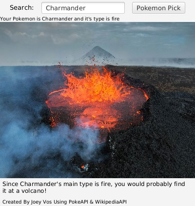
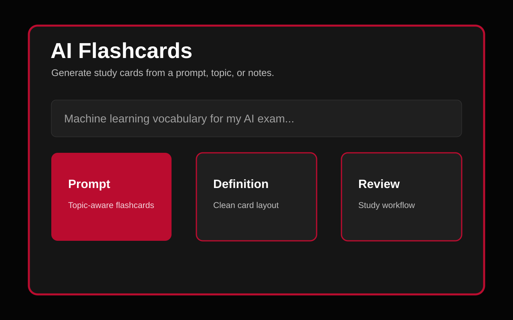
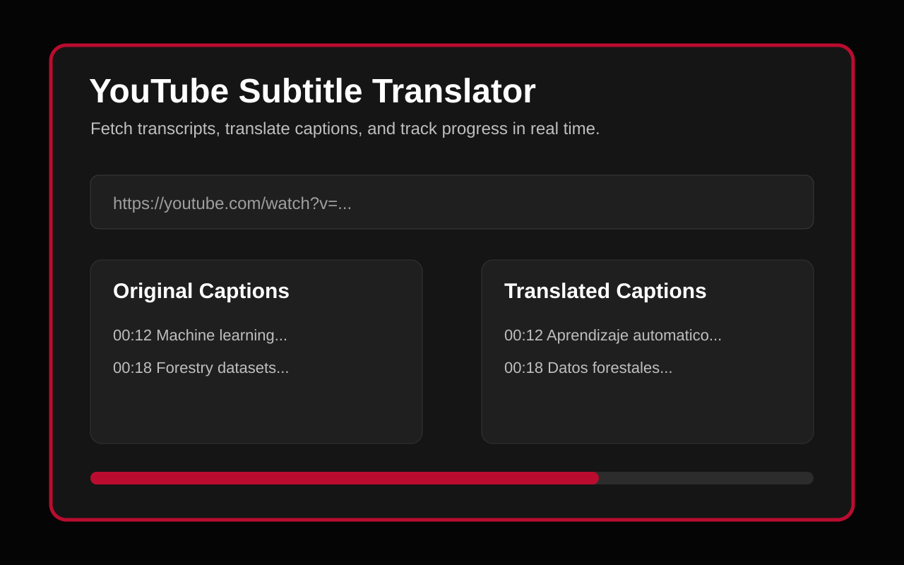

GameGram
Built a full-stack game review platform with team-based development, persistent user data, review posting, and database-backed game discovery.
Applied Skills: Java, HTML/CSS, SQL/MySQL, Docker
GitHubM.S. Artificial Intelligence student and PERSEUS Research Assistant @ The University of Georgia
Skills: Python, Java, SQL, JavaScript, TypeScript, React, Next.js, Django, Unity, Meta VR, MongoDB, Supabase, MySQL, Elasticsearch, Azure AI Foundry, Git & Docker
Holding a B.S. in Computer Science and a B.A. in Cognitive Science from the University of Georgia, I am an AI-focused software engineer who builds practical tools across machine learning, geospatial data, VR research, and full-stack web development.

Built a full-stack game review platform with team-based development, persistent user data, review posting, and database-backed game discovery.
Applied Skills: Java, HTML/CSS, SQL/MySQL, Docker
GitHub
Designed the user-facing interface for Dr. Bruno Da Silva's SETS optimization model, making model inputs easier to review, modify, and run.
Applied Skills: Python, Django, Railway, Next.js, GLPK
WebsiteCreated a browser-based hackathon minigame with custom pixel-art styling, interactive encounters, and a playful museum-heist theme.
Applied Skills: JavaScript, HTML/CSS, Pixel Art
GitHub
Designed a Figma prototype for exploring Athens events alongside nearby lodging, with a focus on quick trip planning and local discovery.
Applied Skills: Figma
Presentation
Built an AI chat assistant powered by Groq that answers cat-related questions through a clean React interface and fast response loop.
Applied Skills: JavaScript, Next.js, CSS, React, MUI, Groq AI
GitHub.jpg)
Created a Firebase-backed inventory manager for adding, tracking, and updating items through a responsive Next.js interface.
Applied Skills: JavaScript, Next.js, CSS, React, MUI, Firebase
GitHub
Developed a checkout system for UGA's Warnell VR lab to manage equipment lending, user records, and lab inventory workflows.
Applied Skills: JavaScript, Next.js, TypeScript, MongoDB
GitHub
Connected the PokeAPI and Wikipedia API in a Java application that combines type data, search results, and generated visual output.
Applied Skills: Java
GitHubDesigned a safety-focused mobile prototype for planning night walks, sharing routes, and making location-aware decisions feel simpler.
Applied Skills: Figma

Built a Next.js study tool that turns user topics and notes into AI-generated flashcards for faster review and self-testing.
Applied Skills: JavaScript, Next.js, Firebase, HTML/CSS
GitHub
Created a transcript translation tool that fetches YouTube captions, sends them through LibreTranslate, and reports progress in real time.
Applied Skills: React, Vite, Spring Boot, Python, LibreTranslate
GitHub
Built a Python recommendation bot that walks users through a propositional-logic decision tree to suggest a movie.
Applied Skills: Python, Decision Trees, Propositional Logic
GitHub